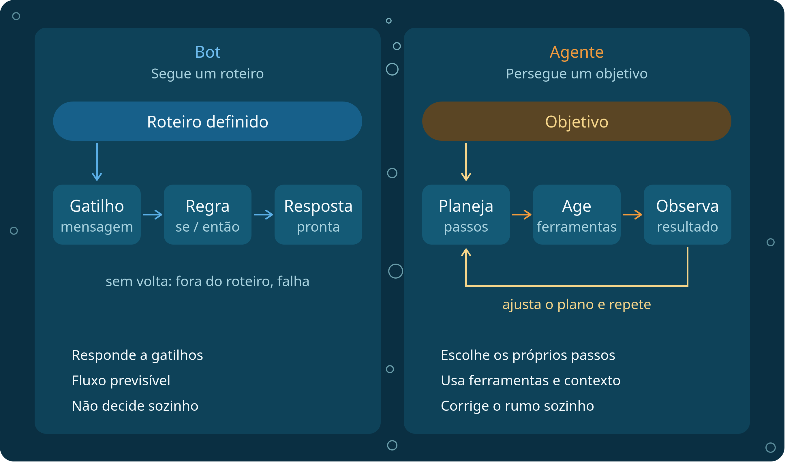
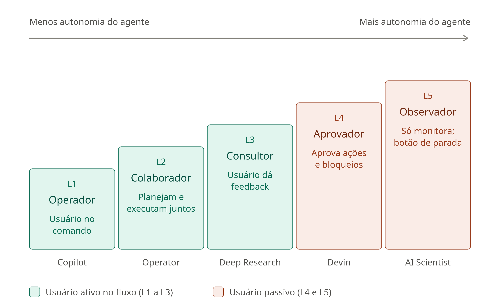

Agentes + Visão Computacional
Agentes + Visão Computacional
🛠️ Ferramentas Utilizadas
🤖 1. O que é um Agente de IA?
Nos Dias 01 e 02, aprendemos a manipular pixels e a utilizar modelos como o YOLO para detectar objetos em imagens e vídeos. Porém, um detector convencional apenas retorna dados brutos (caixas, classes e probabilidades). Como transformar essas detecções em tomada de decisão e ação no mundo real?
É aqui que entra o conceito de Agente de IA: um sistema que observa um ambiente, processa informações e escolhe ações para alcançar um objetivo específico.
┌────────────┐ ┌───────────────┐ ┌─────────┐ ┌──────┐ ┌───────────┐
│ Observação │ ─► │ Interpretação │ ─► │ Decisão │ ─► │ Ação │ ─► │ Resultado │
└────────────┘ └───────────────┘ └─────────┘ └──────┘ └───────────┘
(Imagem/Vídeo) (YOLO + Regras) (Política) (Tools) (Alerta/Log)- Combinação de técnicas: Um agente pode combinar modelos de aprendizado de máquina (como redes neurais), regras de negócio e funções Python. Nem todo agente precisa usar um Modelo de Linguagem (LLM) — agentes baseados em regras ou políticas determinísticas são rápidos, previsíveis e amplamente usados na indústria.
- Agente de Visão (Vision Agent): Utiliza imagens ou vídeos como observações do ambiente. Enquanto um detector comum apenas lista os objetos identificados, o agente de visão usa essas detecções para escolher verificações adicionais, acionar ferramentas externas e decidir o próximo passo.
⚖️ 2. Bot vs. Agente e Níveis de Autonomia
Bot e Agente: qual é a diferença?
Um bot automatiza interações ou tarefas repetitivas, seguindo fluxos fixos acionados por comandos diretos ou gatilhos simples. Já um agente seleciona quais ações executar de acordo com o objetivo e as observações disponíveis no ambiente.
Importante: Os conceitos não são excludentes! Um bot (como um bot do Telegram) pode fazer parte de um sistema agente, atuando como o canal de comunicação ou ferramenta de notificação do agente.

Níveis de Autonomia de Agentes de IA
Dependendo de quanto controle o humano mantém sobre o sistema e de como o agente planeja suas ações, podemos classificar os agentes em diferentes níveis de autonomia:

Artigo original: Levels of Autonomy for AI Agents Working Paper.
🔌 3. Model Context Protocol (MCP)
Quando construímos agentes que precisam acionar diversas funções (consultar bancos de dados, verificar sensores, analisar imagens ou enviar mensagens), integrar cada ferramenta manualmente pode se tornar confuso.
O Model Context Protocol (MCP) é um protocolo aberto que padroniza a forma como aplicações de IA descobrem e utilizam ferramentas (tools) e recursos disponibilizados por servidores compatíveis.
┌───────────────────────────────────────────┐ ┌───────────────────────────┐
│ Host (Colab) │ │ Servidor MCP │
│ ┌─────────────────┐ ┌───────────────┐ │ MCP │ • detectar_objetos() │
│ │ Agente / Código │◄─►│ Cliente MCP │◄─┼─────────►│ • contar_objetos() │
│ └─────────────────┘ └───────────────┘ │ │ • verificar_condicao() │
└───────────────────────────────────────────┘ │ • enviar_alerta() │
└───────────────────────────┘Componentes da Arquitetura MCP:
- Papel: É a aplicação principal que integra o modelo ou a política do agente e coordena toda a interação (por exemplo, o nosso notebook no Google Colab ou uma aplicação em produção).
- Papel: Componente dentro do Host que mantém a conexão com o servidor MCP, consulta quais ferramentas estão disponíveis e solicita a execução de operações.
- Papel: Expõe ferramentas padronizadas (como funções Python decoradas) para que o cliente possa chamá-las de forma segura e estruturada.
Atenção: O MCP não é um modelo de IA e não escolhe sozinho quais ferramentas usar. A decisão sempre cabe ao agente (seja via regras em código ou via LLM). No Google Colab, cliente e servidor podem ser testados na mesma sessão utilizando um transporte compatível, como o transporte em memória do SDK.
💻 4. Prática: Vision Agent para Detectar Mudanças entre Imagens
Nesta prática final, vamos integrar tudo o que construímos no minicurso para criar um Vision Agent completo, capaz de inspecionar imagens com YOLO + OpenCV, tomar decisões com base nas detecções, acionar ferramentas via MCP e enviar alertas automáticos no Telegram!
Arquitetura do Projeto
Imagem enviada ao Colab
↓
YOLO + OpenCV
↓
Detecções estruturadas
↓
Política de decisão do agente
↓
Cliente MCP ↔ Servidor MCP
↓
Ferramenta de verificação
↓
Regra de alerta
↓
Telegram Bot APIFerramentas do Agente
Nosso servidor expõe quatro ferramentas fundamentais para o ciclo do agente:
detectar_objetos(imagem): executa o YOLO e retorna classes, confiança e coordenadas.contar_objetos(deteccoes, classe): contabiliza quantas detecções pertencem a uma classe específica.verificar_condicao(observacao): compara estados ou aplica uma regra definida para o cenário (ex.: mudança na cena ou presença não autorizada).enviar_alerta(mensagem, chat_id): envia uma notificação em tempo real via Telegram Bot API.
Como o agente escolhe o que investigar?
A versão padrão do nosso projeto utiliza regras determinísticas em Python:
- O agente observa a imagem (ou compara duas imagens: antes e depois).
- Se forem detectadas pessoas (
person) ou uma variação na contagem de objetos da cena, a política do agente decide acionar a ferramenta de verificaçãoverificar_condicao(observacao). - Em seguida, a regra de alerta avalia o resultado da verificação e decide se deve chamar
enviar_alerta()para notificar o usuário no Telegram.
Um Modelo de Linguagem (LLM) pode substituir ou complementar esse planejador determinístico:
- Em vez de
if/elsefixos, o LLM lê a lista de ferramentas do Servidor MCP e escolhe quais chamar com base no objetivo em linguagem natural e nos resultados das etapas anteriores. - Como essa opção exige acesso a um provedor de modelo e uma chave de API (
API Key), ela é opcional e não é necessária para executar a versão básica do minicurso.
Passo 1: Instalação das Dependências
No Google Colab, instalamos o ultralytics, o SDK do mcp (ou fastmcp) e a biblioteca requests para comunicação com a API do Telegram.
# No Google Colab, descomente a linha abaixo para instalar:
# !pip install -q ultralytics opencv-python matplotlib requests mcp
import cv2
import requests
from ultralytics import YOLO
# Carrega o modelo YOLO pré-treinado
modelo = YOLO('yolov8n.pt')Passo 2: Definindo as Ferramentas de Visão e Verificação
Resgatamos as funções estruturadas do Dia 02 e adicionamos a ferramenta de verificação de mudanças entre duas observações (ex.: imagem de referência vs. imagem atual) e o disparo de alerta para o Telegram.
def detectar_objetos(caminho_ou_img, limite_confianca=0.5):
"""Retorna lista de dicionários com classe, confiança e coordenadas."""
resultados = modelo.predict(source=caminho_ou_img, conf=limite_confianca, verbose=False)
deteccoes = []
for caixa in resultados[0].boxes:
id_cls = int(caixa.cls[0])
deteccoes.append({
'classe': resultados[0].names[id_cls],
'confianca': round(float(caixa.conf[0]), 3),
'coordenadas': [int(v) for v in caixa.xyxy[0]]
})
return deteccoes
def contar_objetos(deteccoes, classe):
"""Conta as detecções de uma classe específica."""
return sum(1 for obj in deteccoes if obj['classe'] == classe)
def verificar_condicao(observacao):
"""
Aplica a regra do cenário: compara a contagem anterior com a atual
e verifica se houve mudança relevante ou presença de pessoas.
"""
antes = observacao.get('contagem_antes', 0)
depois = observacao.get('contagem_depois', 0)
classe = observacao.get('classe_monitorada', 'person')
mudou = depois != antes
diferenca = depois - antes
return {
'classe': classe,
'mudanca_detectada': mudou,
'diferenca': diferenca,
'alerta_necessario': mudou and depois > 0,
'resumo': f"Classe '{classe}': antes={antes}, agora={depois} (variação: {diferenca:+d})."
}
def enviar_alerta(mensagem, token_bot, chat_id):
"""Envia uma mensagem para o Telegram usando a Bot API."""
if not token_bot or not chat_id:
print(f'[SIMULAÇÃO TELEGRAM] Mensagem que seria enviada:\n👉 {mensagem}')
return {'ok': True, 'simulado': True}
url = f'https://api.telegram.org/bot{token_bot}/sendMessage'
payload = {'chat_id': chat_id, 'text': mensagem}
resposta = requests.post(url, json=payload, timeout=10)
return resposta.json()Passo 3: Expondo as Ferramentas em um Servidor MCP
Com o FastMCP (parte do SDK oficial do MCP em Python), podemos registrar nossas funções como ferramentas padronizadas que qualquer cliente MCP ou LLM consegue descobrir e invocar:
from mcp.server.fastmcp import FastMCP
# Cria o servidor MCP do nosso Agente de Visão
mcp_server = FastMCP('VisionAgentServer')
@mcp_server.tool()
def tool_detectar_objetos(caminho_imagem: str, confianca: float = 0.5) -> list:
"""Detecta objetos em uma imagem usando YOLO e retorna classes, confiança e coordenadas."""
return detectar_objetos(caminho_imagem, limite_confianca=confianca)
@mcp_server.tool()
def tool_contar_objetos(deteccoes: list, classe: str) -> int:
"""Conta quantos objetos de uma determinada classe existem na lista de detecções."""
return contar_objetos(deteccoes, classe)
@mcp_server.tool()
def tool_verificar_condicao(observacao: dict) -> dict:
"""Verifica se houve mudança relevante na cena monitorada."""
return verificar_condicao(observacao)
@mcp_server.tool()
def tool_enviar_alerta(mensagem: str, token_bot: str = '', chat_id: str = '') -> dict:
"""Envia um alerta para o Telegram caso uma condição crítica seja confirmada."""
return enviar_alerta(mensagem, token_bot, chat_id)Passo 4: Executando o Ciclo Completo do Agente
Agora unimos todas as etapas no ciclo Observação → Interpretação → Decisão → Ação → Resultado:
def executar_vision_agent(
img_referencia,
img_atual,
classe_alvo='person',
telegram_token='',
telegram_chat_id=''
):
print('1. [OBSERVAÇÃO] Analisando imagens com YOLO...')
det_antes = tool_detectar_objetos(img_referencia)
det_depois = tool_detectar_objetos(img_atual)
print('2. [INTERPRETAÇÃO] Contabilizando objetos da classe:', classe_alvo)
qtd_antes = tool_contar_objetos(det_antes, classe_alvo)
qtd_depois = tool_contar_objetos(det_depois, classe_alvo)
observacao = {
'classe_monitorada': classe_alvo,
'contagem_antes': qtd_antes,
'contagem_depois': qtd_depois
}
print('3. [DECISÃO] Acionando ferramenta de verificação de condição...')
verificacao = tool_verificar_condicao(observacao)
print(' Resultado da verificação:', verificacao['resumo'])
print('4. [AÇÃO] Avaliando regra de alerta...')
if verificacao['alerta_necessario']:
msg = (
f"🚨 ALERTA DO VISION AGENT!\n"
f"Mudança detectada na cena monitorada.\n"
f"{verificacao['resumo']}"
)
resultado_envio = tool_enviar_alerta(msg, telegram_token, telegram_chat_id)
print('5. [RESULTADO] Alerta processado com sucesso!', resultado_envio)
else:
print('5. [RESULTADO] Nenhuma anomalia crítica. Nenhum alerta enviado.')
# Teste rápido comparando duas cenas
url_cena_1 = 'https://ultralytics.com/images/zidane.jpg'
url_cena_2 = 'https://ultralytics.com/images/bus.jpg'
executar_vision_agent(
img_referencia=url_cena_1,
img_atual=url_cena_2,
classe_alvo='person'
)Clique aqui para abrir o projeto no Colab
💭 Para ir mais a fundo...
📚 Materiais e artigos sugeridos
- Levels of Autonomy for AI Agents — Working Paper (arXiv)
- Documentação Oficial do Model Context Protocol (MCP)
- Documentação Oficial da Telegram Bot API
🤖 Prompts para estudar com LLMs
Copie e cole os prompts abaixo no seu assistente de IA favorito para aprofundar os conceitos vistos na aula:
-
Arquitetura de Agentes de Visão (Regras vs. LLMs):
"Explique a diferença entre um pipeline tradicional de Visão Computacional (que apenas executa um modelo como YOLO) e um Agente de Visão (Vision Agent) que segue o ciclo Observação → Interpretação → Decisão → Ação. Compare quando vale a pena usar uma política de decisão baseada em regras determinísticas em Python e quando vale a pena usar um LLM como planejador."
-
Model Context Protocol (MCP) na Prática:
"Explique de forma didática o que é o Model Context Protocol (MCP), qual problema ele resolve no desenvolvimento de agentes de IA e qual é o papel do Host, do Cliente MCP e do Servidor MCP. Mostre um exemplo simples em Python usando FastMCP expondo duas ferramentas."
-
Integrando Visão Computacional com Bot do Telegram:
"Como criar um bot no Telegram usando o @BotFather, obter o Token e o Chat ID, e enviar tanto mensagens de texto quanto imagens anotadas pelo OpenCV/YOLO em Python usando a biblioteca requests? Mostre o código passo a passo e explique boas práticas para evitar enviar múltiplos alertas repetidos em vídeos."